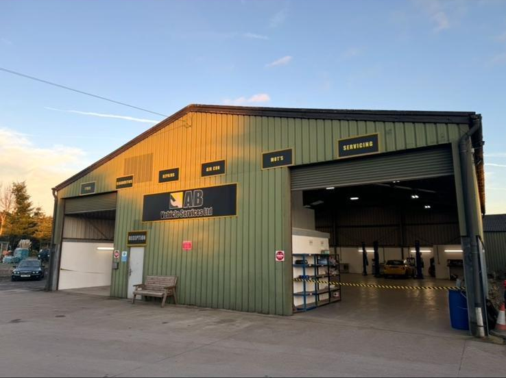

Welcome to A.B Vehicle Services

A.B are a family run garage dedicated to providing honest, reliable and high quality vehicle care.
With years of experience, we pride ourselves on offering a friendly, personal and professional service.
As well as being an MOT testing station for Class 4 and Class 7 vehicles, we offer a wide range of services including repairs, diagnostics, servicing, tyres, wheel alignment (tracking), clutches, exhausts, air conditioning and much more.
Whether you need a quick check or more extensive work, our skilled team is committed to keeping your vehicle running smoothly and efficiently, all in one place.
We've built our reputation on trust and word of mouth, and we're proud to look after our local community, so feel free to give us a call to book your car in, we're always happy to help.
Opening hours:
Monday - Thursday: 8:30am - 5pm
Friday: 8:30am - 4pm
Saturday: 8:30am - 12pm
Sunday: Closed
